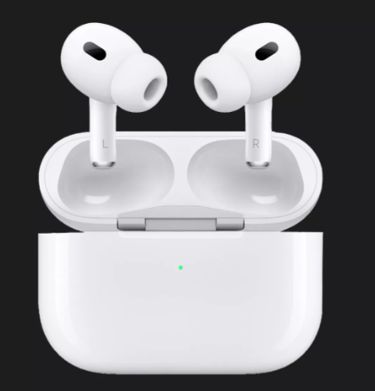

1. Processor –Чіп H2
9.000 грн

Apple AirPods Pro 2 (MQD83, 2022) — бездротові навушники з активним шумопоглинанням, до 6 годин роботи, підтримкою Hey Siri та захистом від вологи IPX4. Оснащені чіпом H2 для кращого звуку й інтеграції з Apple-пристроями. Ідеальні для користувачів iPhone.